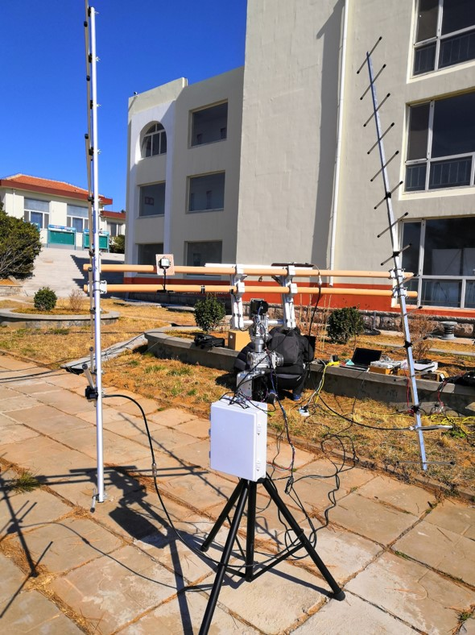

小型卫星地面站系统由智讯创新团队，HITWH业余无线电俱乐部负责研发。初步计划完成地面站系统初样，实现稳定工作，并完成星地链路通信，通联紫丁香一号卫星Lilacsat-1（LO-90），接收卫星下传图片。
紫丁香1号卫星简介
紫丁香一号是哈工大学生团队研制的一颗2U立方体卫星，以大气低热层科学探测为主要任务，重仅2 kg，参与欧洲QB50计划，于2017.4搭载货运飞船前往国际空间站，再由日本实验舱机械臂弹射入轨。
紫丁香一号的主要载荷是伦敦大学学院(UCL)研制的离子和中性粒子质谱仪(INMS)，可测量带电离子和中性原子的质量与分布情况。全球高校研制的48颗卫星协同工作，对人类尚未深入涉足的大气低热层开展实地研究。除科学载荷外，紫丁香一号还搭载了FM/Codec2-BPSK转发器和彩色CCD相机。FM/Codec2-BPSK转发器是一种新体制的业余无线电卫星转发器，上行使用传统的FM模拟语音，在星上进行数字化，由开源声码器Codec2进行数据压缩，并与遥测数据融合后下传，可有效提高功率与频谱利用效率以及遥测数据流量。彩色CCD相机设计有公开的拍摄与下传接口，可由爱好者发送指令进行操作。
紫丁香1号的U/VHF业余无线电载荷信息如下：
| UPLINK | DOWNLINK |
|---|---|
| 上行频率：145.985MHz | 下行频率：436.51MHz |
| Antenna：1/4波长单极天线 | Antenna：1/4波长单极天线 |
| 极化方式：线极化 | 极化方式：线极化 |
| Protocol： | Protocol/Voice Coding： |
| 转发器：Analog Voice | 遥测：CSP |
| 相机接口：AX.25 UI | 转发器：Codec2 |
| 调制方式 | 信道编码：（7,1/2卷积码） |
| FM转发器：FM，67Hz，亚音 | 调制方式：9600bps RRC-BPSK NRZ-M |
| 相机接口：1000bps AFSK | 下行功率：23/27dBm |
卫星地面站通过天线追踪系统OpenATS控制自制的数字旋转器实时对准Lilacsat-1，当卫星过境时控制电台发射image指令（0x00，0x55，0xaa）控制紫丁香1号拍照并下传图像，通过紫丁香团队的gnuradio解调程序进行图像解调，恢复原始图像信息。
方案目标
- 完成地面站初样，实现星地通信（通联LilacSat-1以及LilacSat-2等），收到紫丁香1号、2号信标，并成功解调1号下传图像信息。
地面站组成
小型微型地面站主要由三部分组成：
- 发射机：发送CMOS相机载荷上行控制指令
- 接收机：信标和下行图片数据解调解码
- 天线旋转器系统：实时追踪卫星
地面站系统整体结构框图如下：
系统方案设计
发射机方案
- 发射机采用Yaesu FT-8900R无线电台，计算机通过电台控制PCB转接板控制无线电台，发射指令控制卫星相机载荷
- 发射天线采用V段10单元八木，增益11.6dBi，驻波比小于1.3
- 上行控制指令采用AFSK调制方式，指令协议为AX.25，将数据帧调制成音频，通过FM调制发射
- 0x00：拍摄一幅图像并下传
- 0x55：拍摄一幅图像并存储
- 0xaa：读取已存储的图像并下传
制作测试好的PCB电台转接板：

发射控制客户端软件界面（由BI4KLK编写），主要实现电脑点击Telecommd(发射指令)通过PCB转接板转成电台的PTT发射FM射频信号。
###接收机方案
- 接收机采用430-440MHz UHF 15单元八木天线，增益14dBi
- 前端加入LNA，433MHz，增益15dBi，噪声系数0.5dB(BD4OS高老师提供LNA)
- USRP X310
- 通过GNU Radio进行解调解码（BG2BHC提供解调源码）
LNA：
软件无线电平台USRP X310
接收机解码程序：frontend_rx_uhd
接收机解码程序：demod
天线旋转器方案
- 天线旋转器采用步进电机（2相4线2.3N.m）配合蜗杆减速机（RV030,1:30），AZ（方位）与EL（俯仰）两个自由度旋转
- 配合步进电机驱动器，Arduino作为下位机控制电机实现追踪，下位机系统参照OpenATS（开源），EasyComm协议
- 上位机使用卫星追踪软件实现高精度自动追踪卫星：
- Windows平台：Wxtrack
- Linux平台：Gpredict+HamLlib
地面站系统完成实物图
机械结构改进
旋转器在追踪卫星时，为了减轻电机转动时的扭矩，我们将旋转器控制系统移到了旋转器下方，通过U型卡与防水盒进行集成封装固定，后期需要将整个控制系统集成制成PCB控制板，减少延长线带来的干扰以及其他电磁干扰。


（活捉一只大佬哈哈哈…，地面站系统的总体负责人BI4KLK）
地面站系统演示视频：
链接: https://pan.baidu.com/s/1aeHmvmL9rm1vFldmGC1t6Q 提取码: m62v
测试情况
20190315：成功收到LilacSat-1信标
20190418：成功收到LilacSat-2信标并监听到其他Ham通联情况
具体可见视频：链接: https://pan.baidu.com/s/1kJf_Da0FVDi0Gzvdgd3ZpA ，提取码: cgme
致谢
- OpenATS（Open Antenna Tracking System）：郝经利（BI1GMM）
- 哈工大紫丁香团队，龙江卫星总师：韦明川（BG2BHC）
- 高国强（BD4OS）
- 方案参考：BG6LQV、BG6WRI
- 智讯创新工作室团队、各位老师的支持